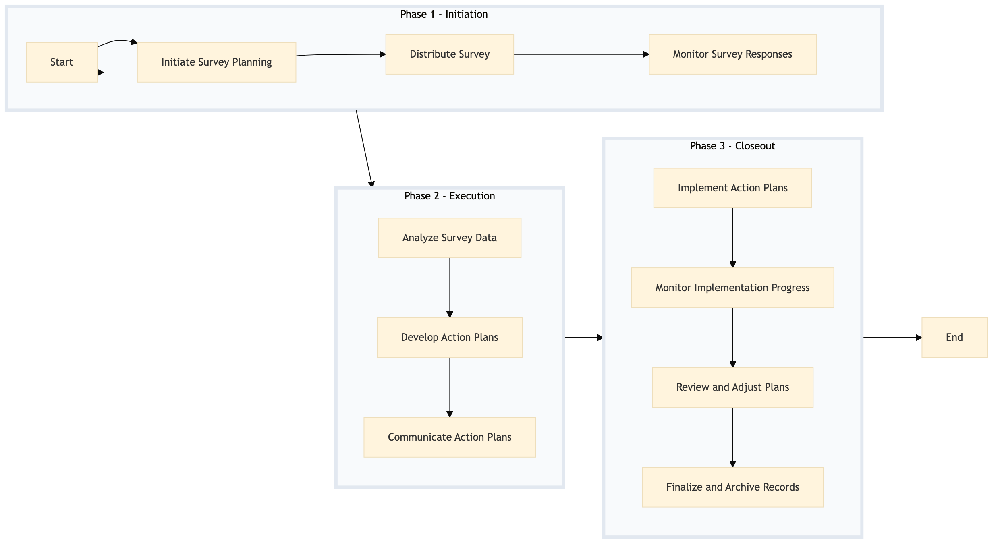

| Role | Steps |
|---|---|
| Human Resources Director | 1.1 2.2 3.3 |
| Human Resources Manager | 1.2 2.3 3.4 |
| Human Resources Coordinator | 1.3 3.1 |
| Human Resources Analyst | 2.1 3.2 |
| General Manager | 2.2 3.3 |
| Step | Name | Role | System | Input | Output | KPI | Dec? | Exc? | Pain Point / Risk |
|---|---|---|---|---|---|---|---|---|---|
| 1.1 | Initiate Survey Planning | Human Resources Director | Oracle OPERA Cloud, Workday HCM | Survey template, employee list | Customized survey questionnaire | Less than 1 week for planning | N | Y | Ensuring the survey is relevant and not too lengthy |
| 1.2 | Distribute Survey | Human Resources Manager | Oracle OPERA Cloud, Book4Time | Customized survey questionnaire | Survey distribution logs | Less than 3 days for distribution | N | Y | Achieving high response rates |
| 1.3 | Monitor Survey Responses | Human Resources Coordinator | Oracle OPERA Cloud, Book4Time | Survey distribution logs | Response rate report | Real-time monitoring | N | Y | Handling low response rates |
| 2.1 | Analyze Survey Data | Human Resources Analyst | Microsoft Power BI, Oracle OPERA Cloud | Survey responses | Data analysis report | Less than 1 week for analysis | N | Y | Interpreting complex data accurately |
| 2.2 | Develop Action Plans | Human Resources Director, General Manager | Oracle OPERA Cloud, Workday HCM | Data analysis report | Action plan document | Less than 2 weeks for planning | N | Y | Aligning action plans with business goals |
| 2.3 | Communicate Action Plans | Human Resources Manager, General Manager | Oracle OPERA Cloud, Book4Time | Action plan document | Communication logs | Less than 1 week for communication | N | Y | Ensuring all employees are informed |
| 3.1 | Implement Action Plans | Human Resources Coordinator, Department Heads | Oracle OPERA Cloud, Workday HCM | Action plan document | Implementation logs | Ongoing monitoring with milestones | Y | Y | Executing plans across different departments |
| 3.2 | Monitor Implementation Progress | Human Resources Analyst, General Manager | Microsoft Power BI, Oracle OPERA Cloud | Implementation logs | Progress report | Weekly progress updates | Y | Y | Tracking multiple initiatives simultaneously |
| 3.3 | Review and Adjust Plans | Human Resources Director, General Manager | Oracle OPERA Cloud, Workday HCM | Progress report | Adjusted action plan document | Bi-weekly review cycles | Y | Y | Making timely adjustments based on feedback |
| 3.4 | Finalize and Archive Records | Human Resources Coordinator, IT Manager | Oracle OPERA Cloud, Workday HCM, Birchstreet Procurement | Adjusted action plan document, implementation logs | Archived records | Less than 1 week for archiving | N | Y | Ensuring all documents are securely stored |
HR-EW-01 is a structured process document designed to conduct an employee engagement survey and develop action plans at a full-service Marriott hotel. The process aims to enhance staff satisfaction and retention by gathering feedback and implementing targeted initiatives.